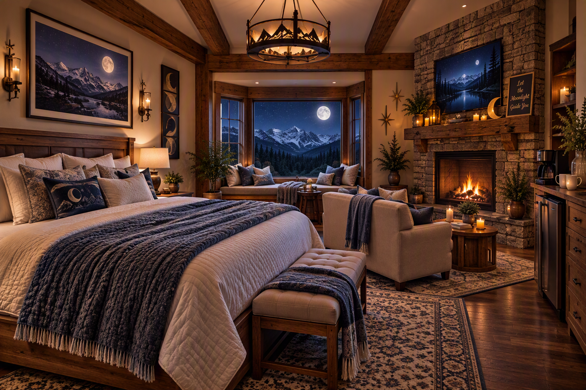
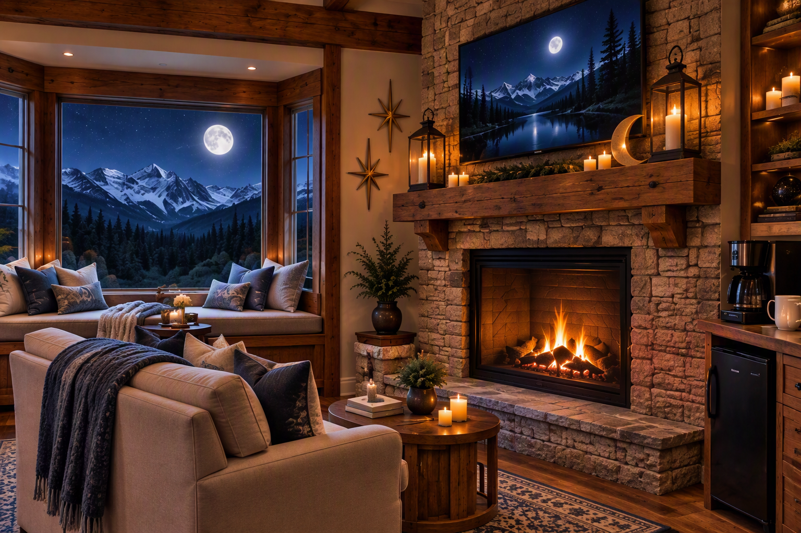
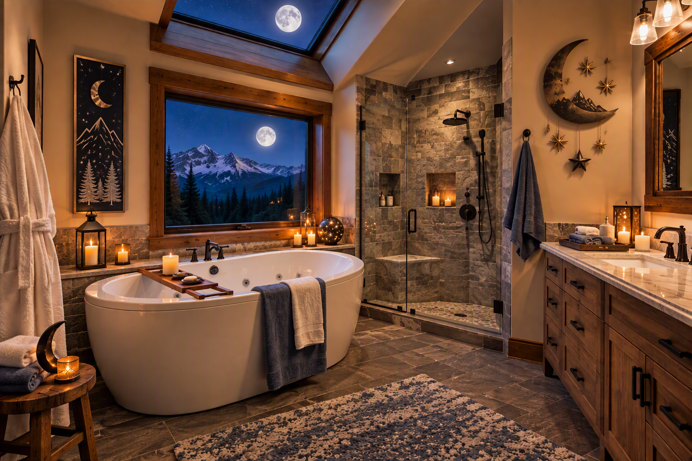

Moonlight Ridge Suite
Room Info
The mountain view takes center stage in the Moonlight Ridge Suite. Soft cream and silver-blue bedding, natural wood details, and a king-size bed create a comfortable place to rest, while the cushioned window nook gives guests a front-row seat to the beauty of the San Juan Mountains.
Across the room, a stone fireplace, comfortable love seat, and large flat-screen television create a cozy place to relax. The suite also includes a coffee and tea station and stocked mini-fridge, along with a private bathroom featuring a massage-jet soaking tub beneath a skylight and a separate walk-in shower.

Suite Amenities
- King-size bed with soft cream and silver-blue bedding
- Cushioned mountain-view window nook
- Large flat-screen television for relaxing evenings
- Coffee and tea bar available day and night
- Stocked mini-fridge with refreshments and local treats
- Massage-jet soaking tub and separate walk-in shower
- Luxurious bathrobes and slippers for guest comfort
- Complimentary Wi-Fi
Special Features
- Mountain-View Nook
- Settle into the cushioned window nook and enjoy peaceful views of the San Juan Mountains with space for reading or morning coffee.
- Stone Fireplace
- Relax on the comfortable love seat facing the stone fireplace after a day of exploring the mountains.
- Massage-Jet Soaking Tub
- Unwind in a luxurious soaking tub with massage jets beneath a skylight that brings natural light into the bathroom.
- Separate Walk-In Shower
- Enjoy a spacious glass-enclosed walk-in shower located separately from the soaking tub.
- Mini-Fridge and Snack Bar
- Enjoy complimentary refreshments and local treats conveniently stocked in the suite's mini-fridge and snack bar.


Suite Rates
- Weekday Rate: $185 per night
- Weekend Rate: $205 per night
- Holiday Rate: $230 per night
- Weekly Rate: $1,020 per week
Occupancy: Comfortably sleeps 2 guests